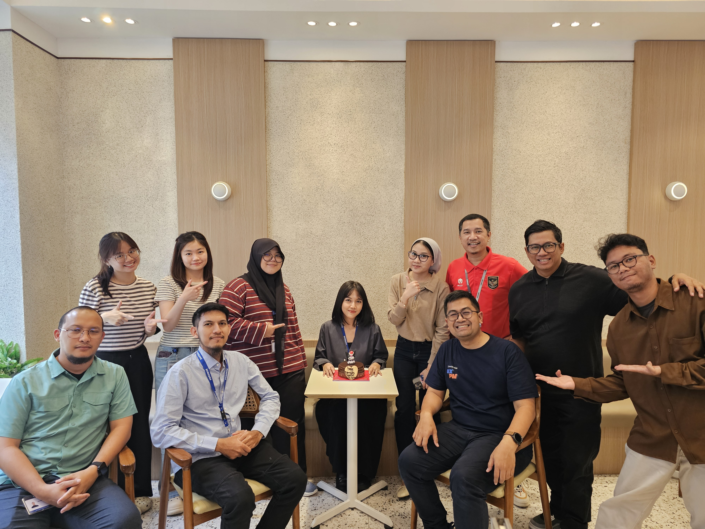
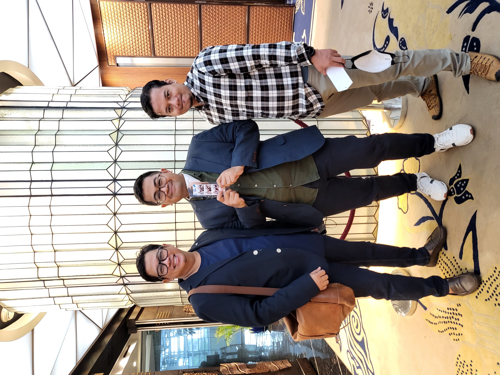
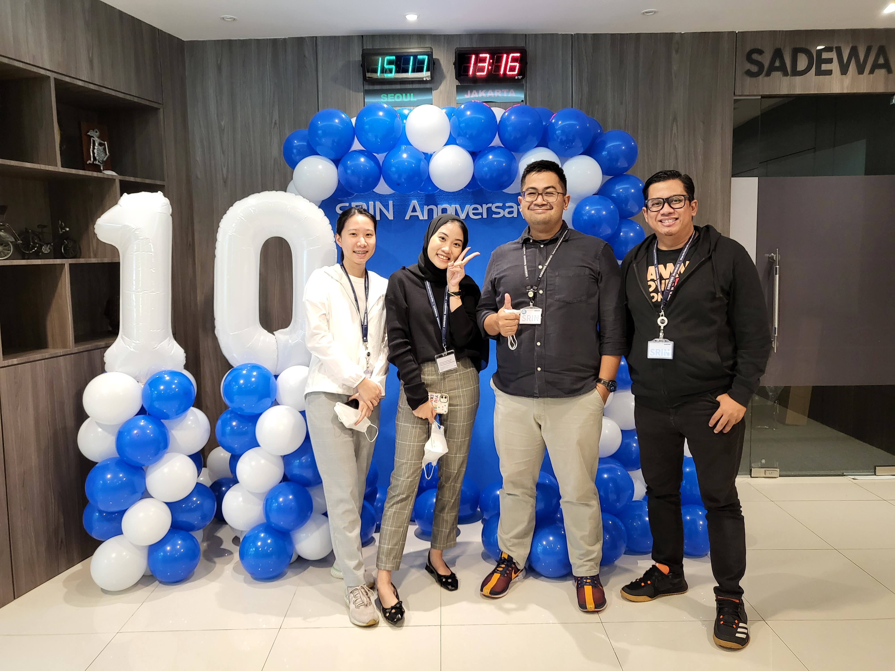
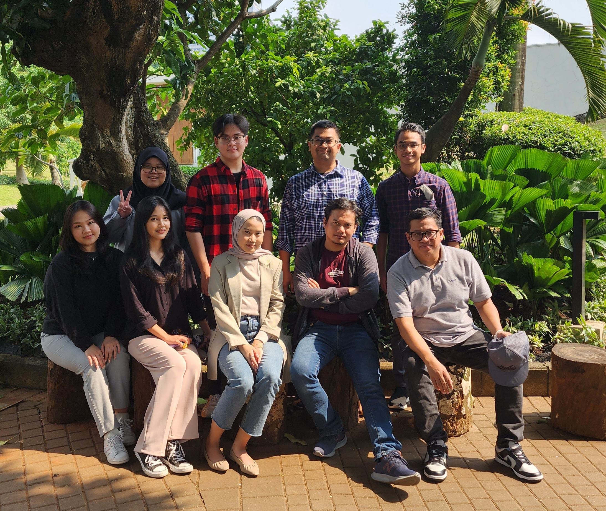
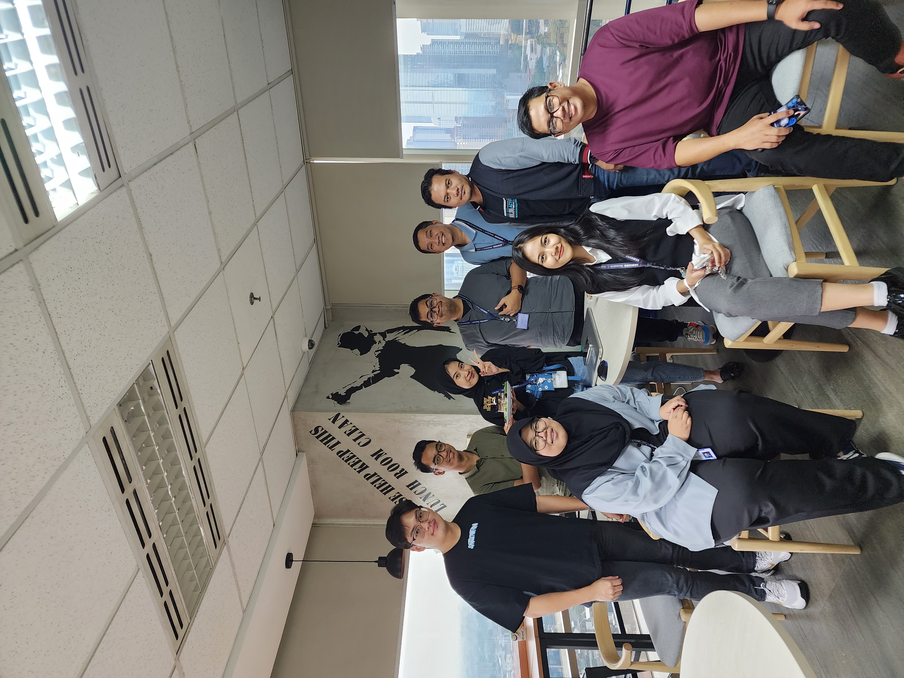
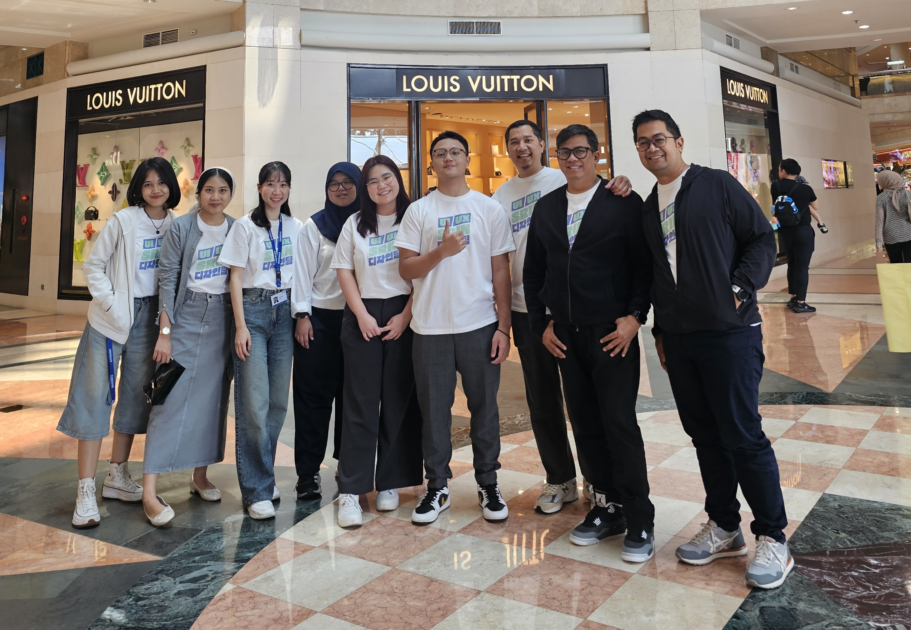
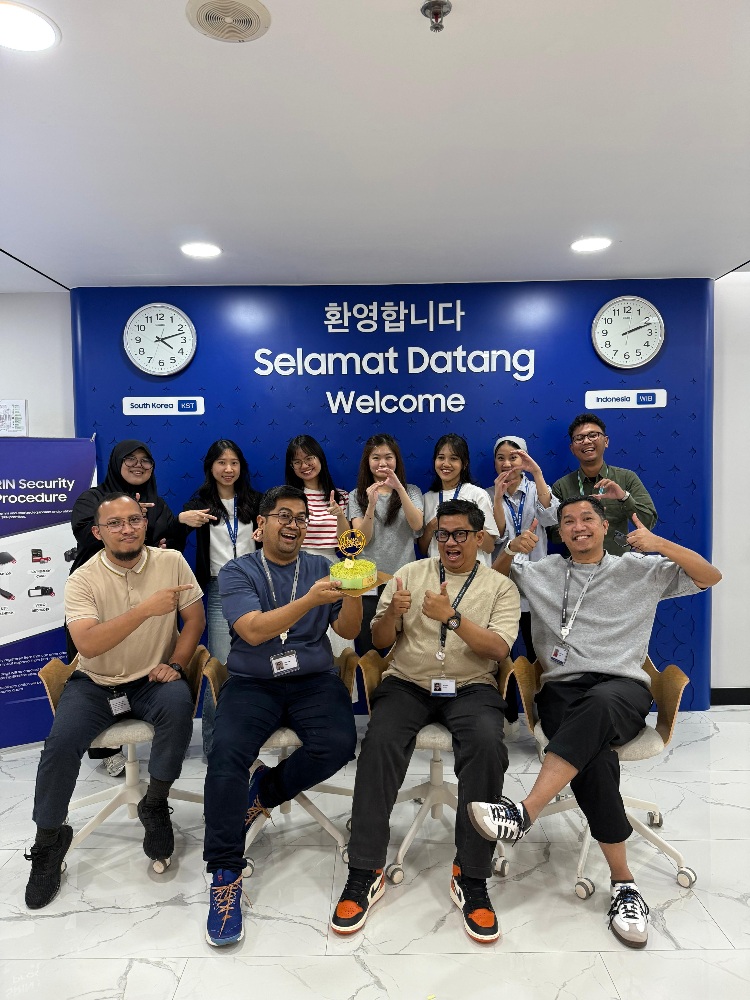

A story of building a Design team. How a small creative team grew into a team of ten — through craft, strategy, and cumulative learning of design.


Chapter 01
It began with two members, we were modest by headcount, but not by vision. The vision was to enlarge the team and bring more business to the local economy. We made a quiet decision: to deliver excellent design whether or not anyone asked for it. Whether or not the project had budget. We believed that quality was its own argument — that if we kept the bar high, the work would eventually make the case for us. We delivered prototypes when a static spec was expected. Over time, people noticed — many other people start requesting for design.
This was the foundation: Everything we touch must be in high quality.
“Everything we touch must be in high quality.”
Chapter 02
A static mockup asks the viewer to imagine. A prototype invites them to experience. So we stopped presenting only pictures of the design and started building prototypes that feels real, leveraging our own experience when designing and most importantly, presenting the experience to our stakeholders.
The prototype became our lingua franca. It turned abstract design intent into shared reality. It gave product managers something concrete to test assumptions against, and it gave engineers a clear sense of the intended experience before a single line of production code was written.
We invested heavily in this practice even when the timelines were tight. Because a prototype, done well, is not an extra step — it’s a shortcut to alignment.


Chapter 03
The nature of our projects was an internal system tool. These systems have similar UI but each of them have different functions and are developed by different teams, we cannot serve all projects due to our small team. UI patterns were identified, and we have an idea to build design standardisation that could serve many teams at once.
Individually, these were small things. Collectively, they were an invisible tax on every project: on development time, on review cycles, on the coherence of the product itself.
So we built the foundation: a design language that documented the common elements — the typography scale, the colour tokens, the spacing grid, the component library. Not as rigid rules, but as shared decisions made once, so they wouldn’t have to be made again and again.
“Standardisation isn’t the enemy of creativity, it’s what gives creativity a stable place to stand”

Chapter 04
We introduced Design Reviews: sessions where work-in-progress was shared openly, questioned honestly, and refined collectively. At first, they felt vulnerable. Designers are taught to protect their work until it’s ready. We had to unlearn that instinct together.
How we learned together: Monthly skill sessions where one person taught what they knew best. A culture of generous critique: specific, direct, and always in service of the work — never the person.
We found that a team that learns together develops a shared sensibility — a cumulative knowledge that does not belong to only 1 person.
Chapter 05
We learned to communicate in context. In early conversations, we manage expectation, be proactive and maintain delivery time that can be considered as “just enough” timeline.
We also learned when to say no — and how to say it. We value our work as much as we deliver value to our stakeholders. Our design can be free but it cannot be cheap. Knowing which problems deserve investment is as important as knowing how to solve them


Chapter 06
The final lesson — the one that took the longest to truly understand — is that the best thing a leader can do is become unnecessary. Not irrelevant. Unnecessary. To build a team so capable, so aligned, so confident in their own judgment that the centre of gravity shifts from the leader to the collective.
We began deliberately handing over leadership. Senior designers ran workshops I used to run. Junior designers presented work in forums I used to dominate. Each time, I stepped back just far enough to give the person room — and stayed close enough to catch them if they fell.
At ten people, we were not five times the team we’d been at two. We were something different entirely: a self-sustaining creative culture, with its own gravity, its own standards, its own momentum. The team had grown.